By the Brothers Grimm • A bedtime tale about two lost children, a house made of sweets, and a witch who gets her comeuppance.
📖 15 Story Beats🎨 15 Storybook Watercolors🎙️ Voice Narration (10m 59s)🎬 Narrated Story Video👶 Ages 4–7
🎙️
Bedtime Voice Narration
Gentle, soothing narration matching the story text
0:0010:59
Scene 1 • The Woodcutter's Cottage
Hard by a great forest dwelt a poor wood-cutter with his wife and his two children. The boy was called Hansel, and the girl Gretel. He had little to bite and to break, and once when great scarcity fell on the land, he could no longer procure daily bread.
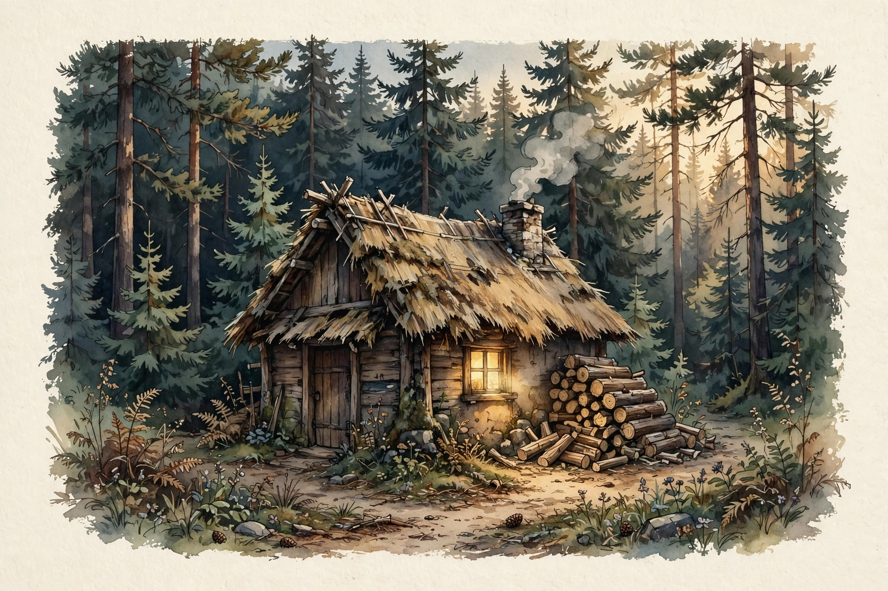
🔍 Zoom
A poor woodcutter's cottage, hard by a great forest.
Scene 2 • The Stepmother's Plan
The two children had not been able to sleep for hunger, and had heard what their step-mother said to their father. Gretel wept bitter tears and said to Hansel, "Now all is over with us."
😰 Gretel
“Now all is over with us.” — “Be quiet, Gretel,” said Hansel. “Do not distress thyself; I will soon find a way to help us.”
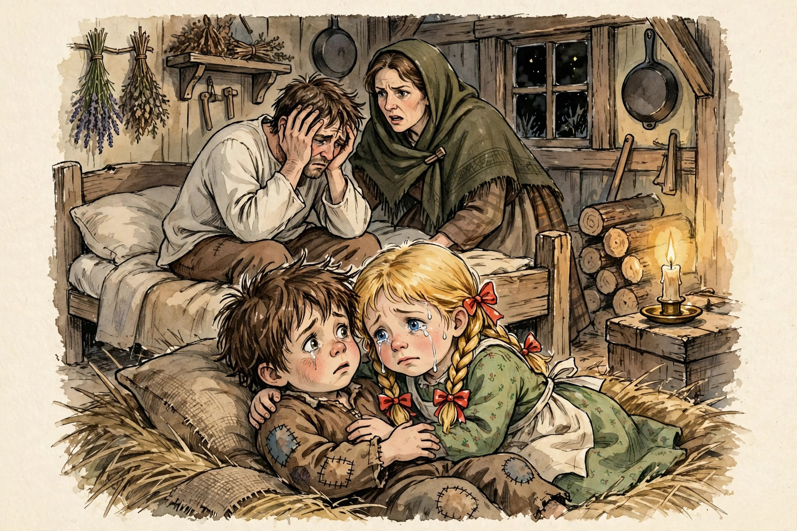
🔍 Zoom
The children overhear the cruel plan.
Scene 3 • The White Pebbles
And when the old folks had fallen asleep, he got up, put on his little coat, opened the door below, and crept outside. The moon shone brightly, and the white pebbles which lay in front of the house glittered like real silver pennies. Hansel stooped and put as many of them in the little pocket of his coat as he could possibly get in.
🧒 Hansel
“Be comforted, dear little sister, and sleep in peace; God will not forsake us.”
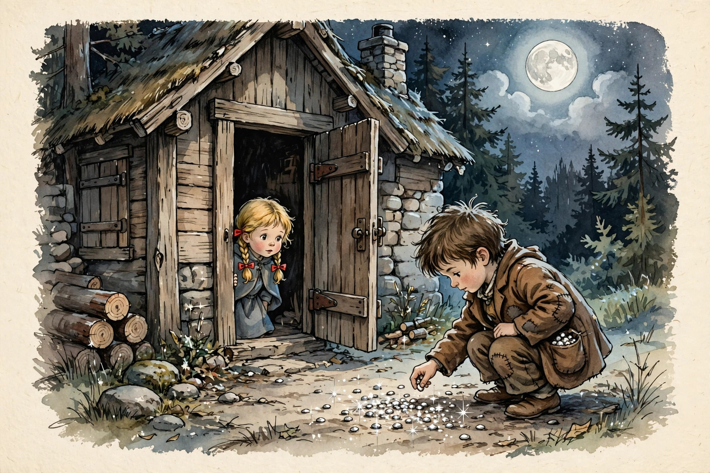
🔍 Zoom
Hansel gathers pebbles in the moonlight.
Scene 4 • Into the Forest
When they had walked a short time, Hansel stood still and peeped back at the house, and did so again and again.
🧒 Hansel
“Ah, father, I am looking at my little white cat, which is sitting up on the roof and wants to say good-bye to me.” — But Hansel had been constantly throwing one of the white pebble-stones out of his pocket on the road.
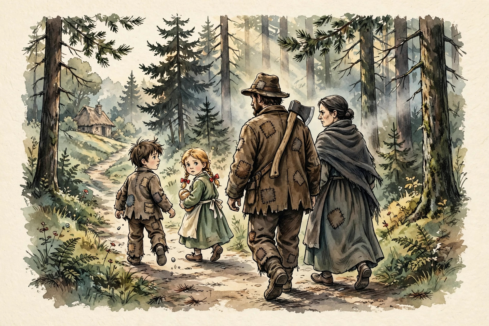
🔍 Zoom
Hansel drops pebbles along the way.
Scene 5 • The False Axe
The woman said, "Now, children, lay yourselves down by the fire and rest; we will go into the forest and cut some wood. When we have done, we will come back and fetch you away." As they heard the strokes of the wood-axe, they believed that their father was near. It was not, however, the axe; it was a branch which he had fastened to a withered tree, which the wind was blowing backwards and forwards. And they fell fast asleep.
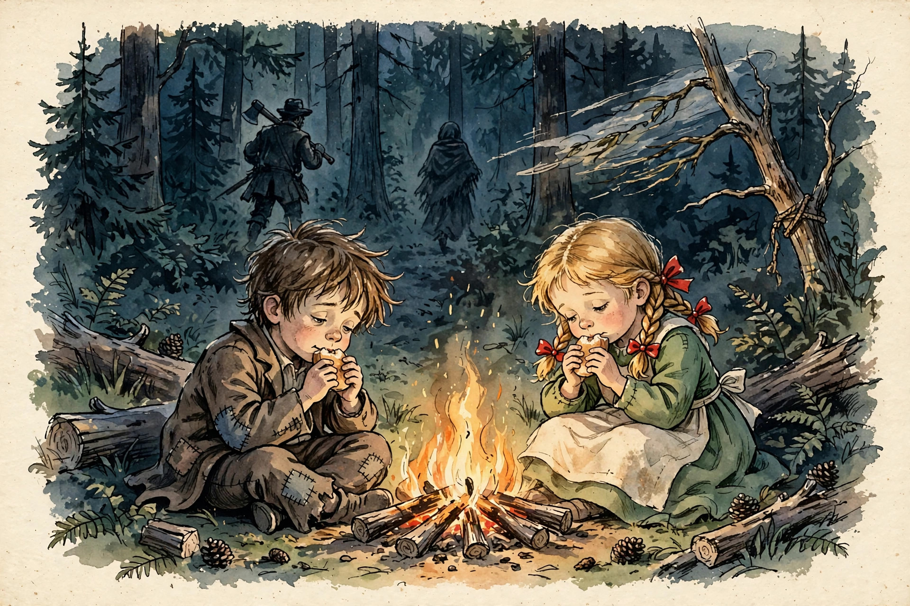
🔍 Zoom
The parents slip away — the axe was a trick.
Scene 6 • Home by Moonlight
When at last they awoke, it was already dark night. But Hansel comforted her and said, "Just wait a little until the moon has risen, and then we will soon find the way." And when the full moon had risen, Hansel took his little sister by the hand and followed the pebbles, which shone like newly-coined silver pieces and showed them the way. They walked the whole night long, and by break of day came once more to their father's house.
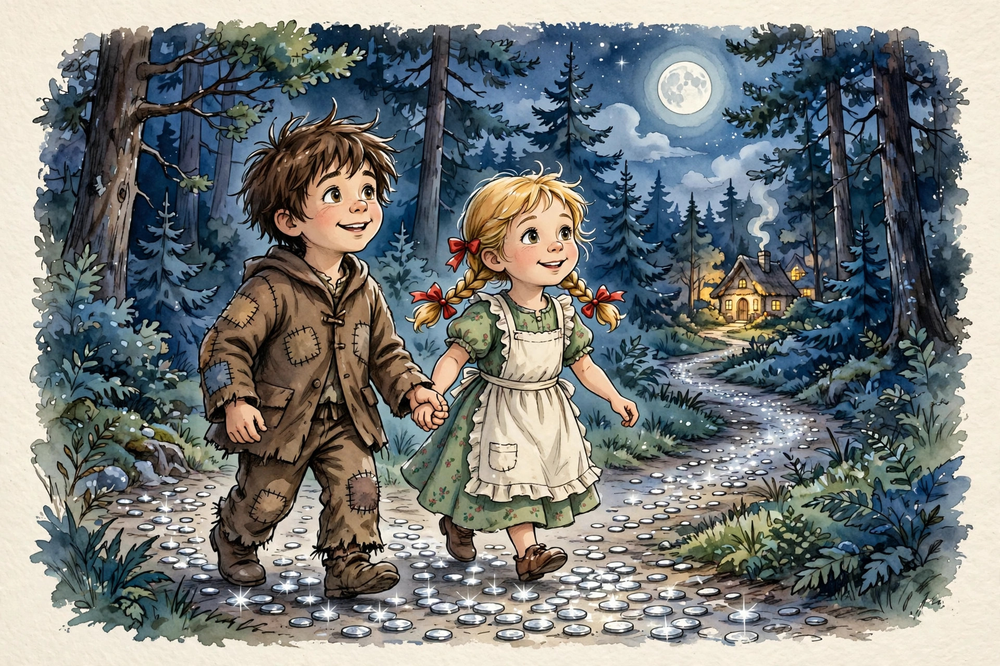
🔍 Zoom
The pebbles shine like silver and lead them home.
Scene 7 • The Locked Door
Not long afterwards, there was once more great scarcity, and the children must go farther into the wood so that they will not find their way out again. When the old folks were asleep, Hansel again got up and wanted to go out and pick up pebbles as he had done before, but the woman had locked the door, and Hansel could not get out.
🧒 Hansel
“Do not cry, Gretel; go to sleep quietly. The good God will help us.”
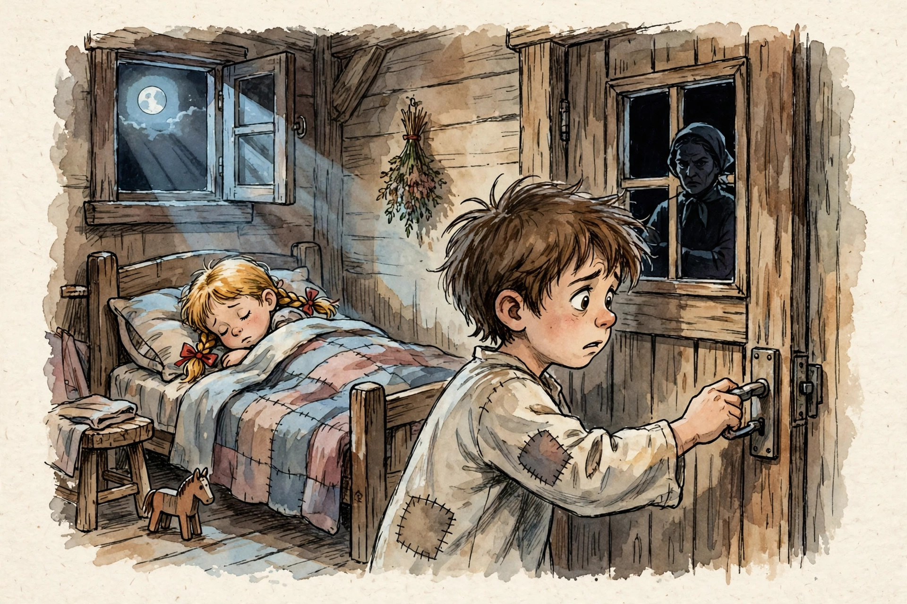
🔍 Zoom
The door is locked — no pebbles this time.
Scene 8 • Crumbs of Bread
Early in the morning the woman led the children still deeper into the forest, where they had never in their lives been before. On the way, Hansel crumbled his piece of bread in his pocket, and often stood still and threw a morsel on the ground. When it was noon, Gretel shared her piece of bread with Hansel, who had scattered his by the way. Then they fell asleep, and evening came and went, but no one came to the poor children.
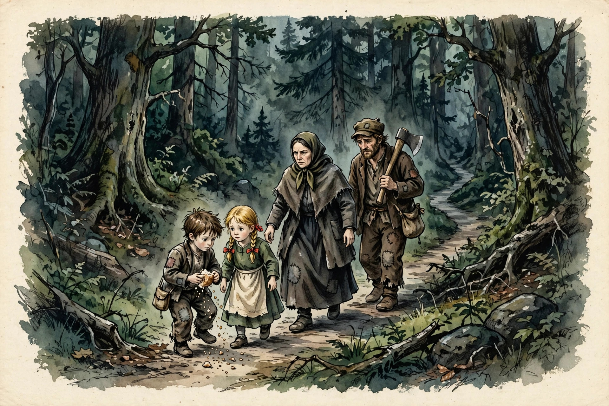
🔍 Zoom
Hansel scatters breadcrumbs along the path.
Scene 9 • Lost in the Forest
When the moon came, they set out, but they found no crumbs, for the many thousands of birds which fly about in the woods and fields had picked them all up. They walked the whole night and all the next day, too, but they did not get out of the forest, and were very hungry, for they had nothing to eat but two or three berries which grew on the ground.
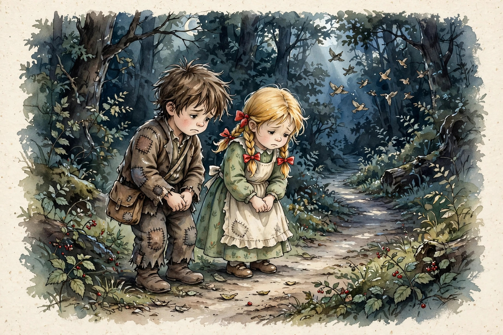
🔍 Zoom
The birds ate every crumb. They are lost.
Scene 10 • The Snow-White Bird
It was now three mornings since they had left their father's house. When it was mid-day, they saw a beautiful snow-white bird sitting on a bough, which sang so delightfully that they stood still and listened to it. And when it had finished its song, it spread its wings and flew away before them, and they followed it until they reached a little house.
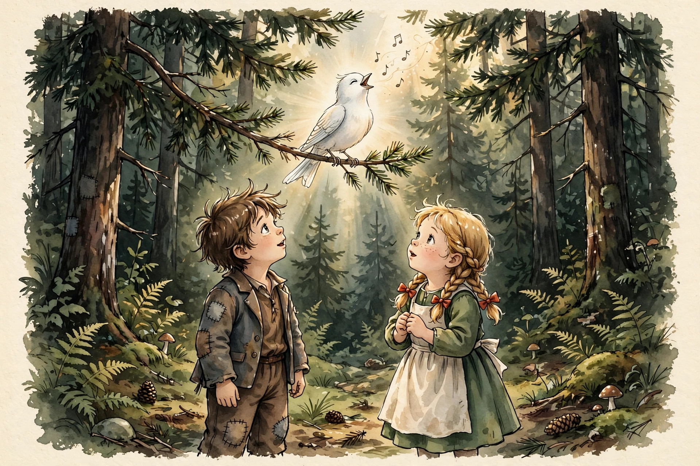
🔍 Zoom
A snow-white bird sings — and leads them on.
Scene 11 • The Gingerbread House
And when they came quite up to the little house, they saw that it was built of bread and covered with cakes, but that the windows were of clear sugar.
🍭 The Voice
“Nibble, nibble, gnaw, who is nibbling at my little house?” — The children answered, “The wind, the wind, the heaven-born wind,” and went on eating without disturbing themselves.
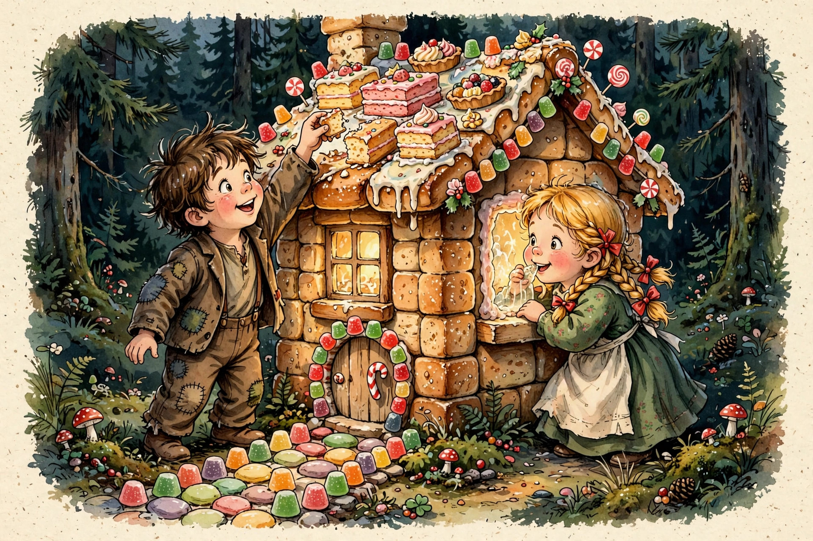
🔍 Zoom
“Nibble, nibble, gnaw, who is nibbling at my little house?”
Scene 12 • The Kind Old Woman
Suddenly the door opened, and a very, very old woman, who supported herself on crutches, came creeping out. "Oh, you dear children, who has brought you here? Do come in and stay with me. No harm shall happen to you." Then good food was set before them, milk and pancakes, with sugar, apples, and nuts. Afterwards two pretty little beds were covered with clean white linen, and Hansel and Gretel lay down in them and thought they were in heaven.
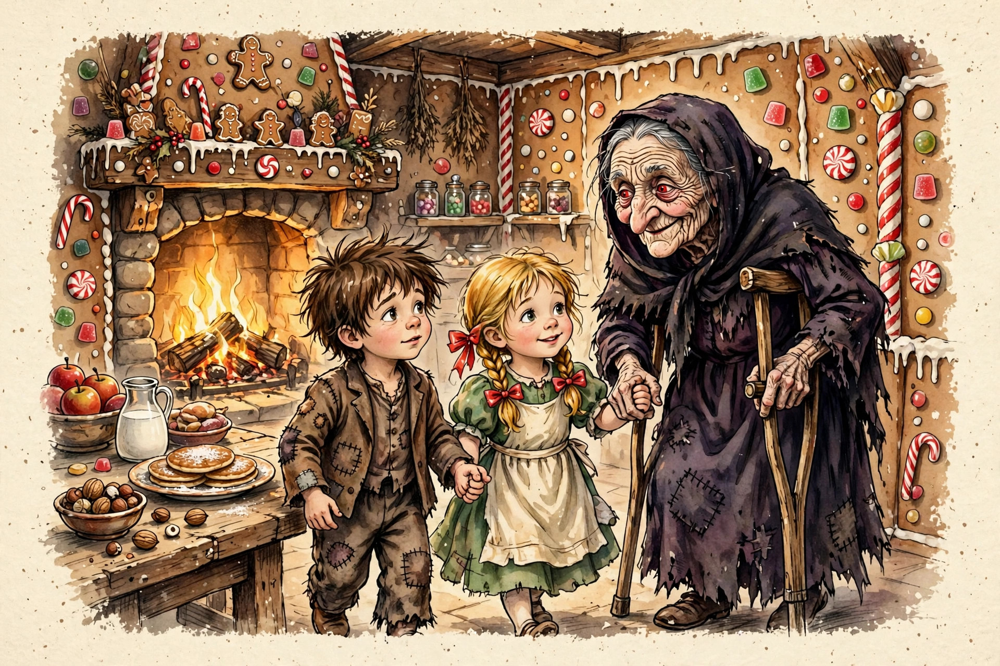
🔍 Zoom
“Do come in and stay with me.”
Scene 13 • The Witch Revealed
The old woman had only pretended to be so kind; she was in reality a wicked witch who lay in wait for children, and had only built the little house of bread in order to entice them there. Early in the morning she seized Hansel with her shrivelled hand, carried him into a little stable, and shut him in with a grated door.
🧙 The Witch
“Get up, lazy thing; fetch some water, and cook something good for thy brother. He is in the stable outside and is to be made fat. When he is fat, I will eat him.”
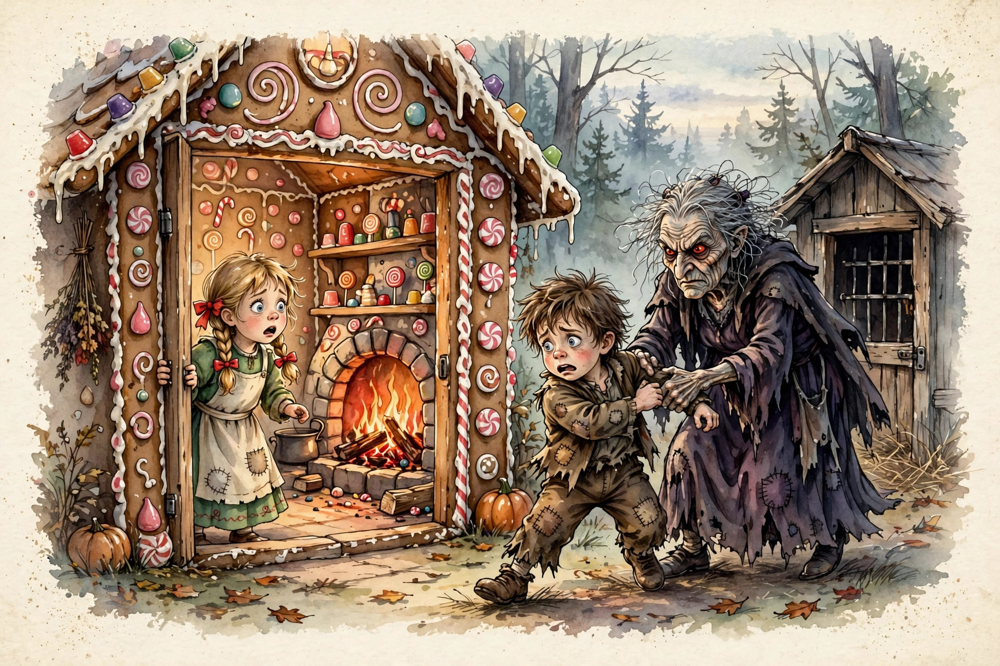
🔍 Zoom
“When he is fat, I will eat him.”
Scene 14 • The Bone Trick
Grethel began to weep bitterly, but it was all in vain; she was forced to do what the wicked witch ordered her. And now the best food was cooked for poor Hansel, but Gretel got nothing but crab-shells. Every morning the woman crept to the little stable and cried, "Hansel, stretch out thy finger that I may feel if thou wilt soon be fat." Hansel, however, stretched out a little bone to her, and the old woman, who had dim eyes, could not see it, and thought it was Hansel's finger. When four weeks had gone by, and Hansel still continued thin, she was seized with impatience and would not wait any longer.
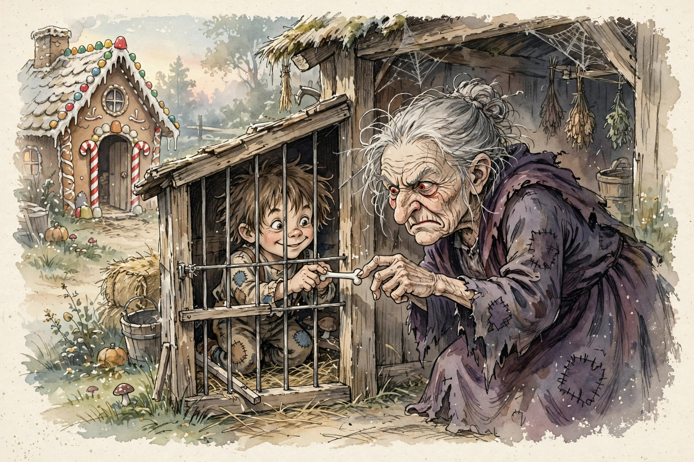
🔍 Zoom
Four weeks of the bone trick — Hansel stays thin.
Scene 15 • Tomorrow I Will Kill Him
"Hola, Gretel," she cried to the girl; "be active, and bring some water. Let Hansel be fat or lean; tomorrow I will kill him and cook him." Ah, how the poor little sister did lament when she had to fetch the water, and how her tears did flow down over her cheeks!
😢 Gretel
“Dear God, do help us. If the wild beasts in the forest had but devoured us, we should at any rate have died together.”
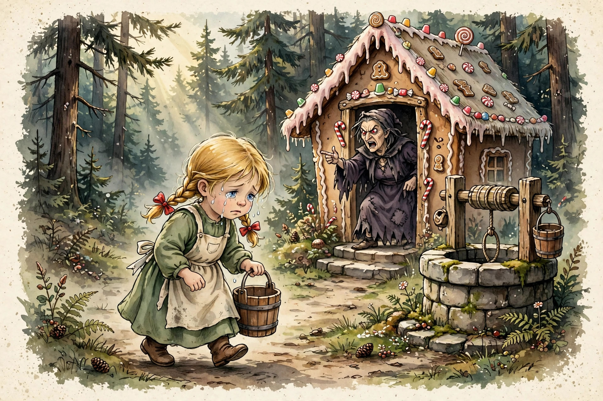
🔍 Zoom
“Tomorrow I will kill him and cook him.”
Scene 16 • The Witch in the Oven
"We will bake first," said the old woman. "I have already heated the oven and kneaded the dough." She pushed poor Gretel out to the oven, from which flames of fire were already darting. "Creep in," said the witch, "and see if it is properly heated." But Gretel saw what she had in her mind and said, "I do not know how I am to do it; how do you get in?" "Silly goose," said the old woman. "The door is big enough; just look, I can get in myself!" and she crept up and thrust her head into the oven. Then Gretel gave her a push that drove her far into it, and shut the iron door, and fastened the bolt.
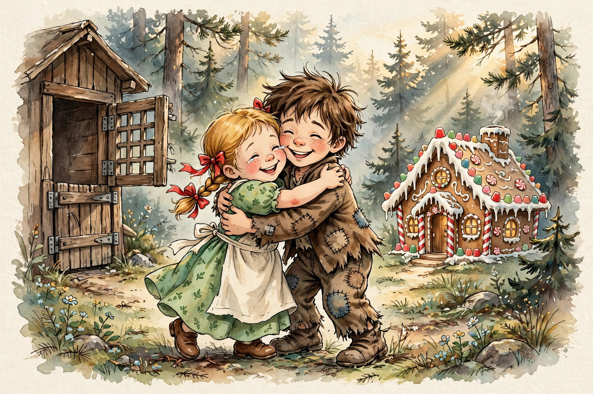
🔍 Zoom
Gretel outsmarts the witch — and Hansel is free!
Scene 17 • Hansel, We Are Saved!
Gretel, however, ran like lightning to Hansel, opened his little stable, and cried, "Hansel, we are saved! The old witch is dead!" Then Hansel sprang out like a bird from its cage when the door is opened for it. How they did rejoice and embrace each other, and dance about and kiss each other! And as they had no longer any need to fear her, they went into the witch's house, and in every corner there stood chests full of pearls and jewels.
💎 Hansel
“These are far better than pebbles!” — He thrust into his pockets whatever could be got in, and Gretel filled her pinafore full.
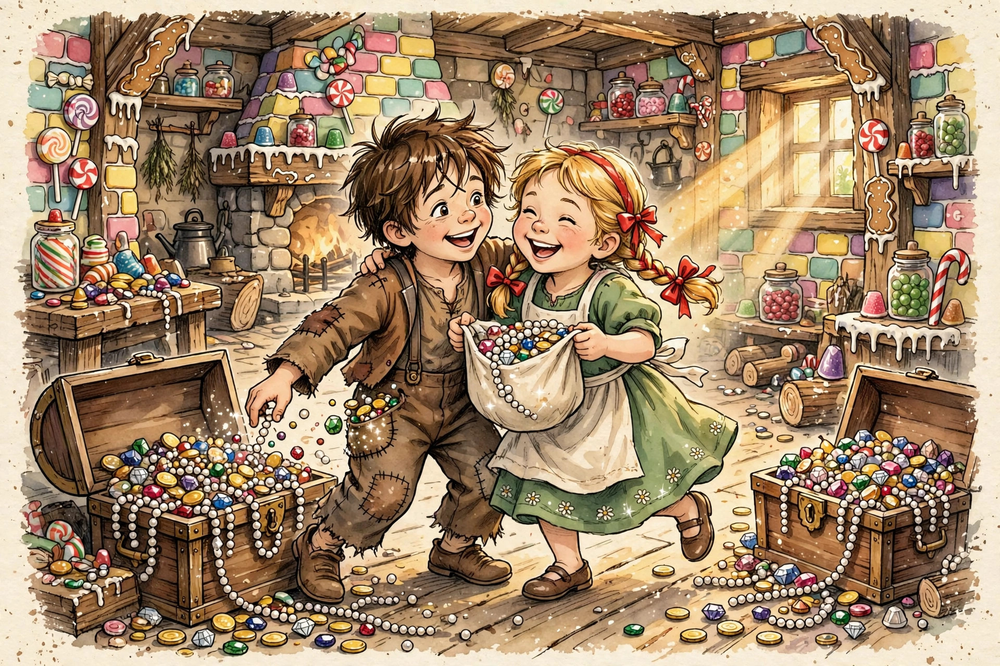
🔍 Zoom
“These are far better than pebbles!”
Scene 18 • The White Duck
"But now we will go away," said Hansel, "that we may get out of the witch's forest." When they had walked for two hours, they came to a great piece of water. "We cannot get over," said Hansel. "I see no foot-plank, and no bridge." "But a white duck is swimming there," answered Gretel. "If I ask her, she will help us over." "No," replied Gretel, "that will be too heavy for the little duck; she shall take us across, one after the other." And the good little duck did so.
🦆 Gretel's Rhyme
“Little duck, little duck, dost thou see, Hansel and Gretel are waiting for thee? There's never a plank or bridge in sight; take us across on thy back so white.”
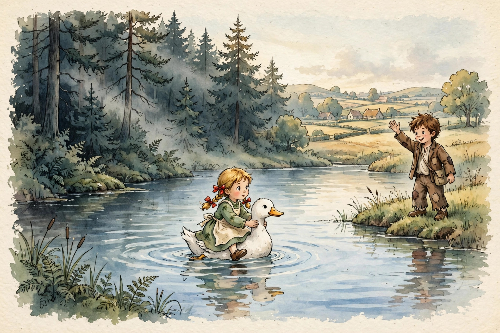
🔍 Zoom
The good little duck carries them across.
Scene 19 • Home Again
When they were once safely across and had walked for a short time, the forest seemed to be more and more familiar to them, and at length they saw from afar their father's house. Then they began to run, rushed into the parlour, and threw themselves into their father's arms. The man had not known one happy hour since he had left the children in the forest; the woman, however, was dead.
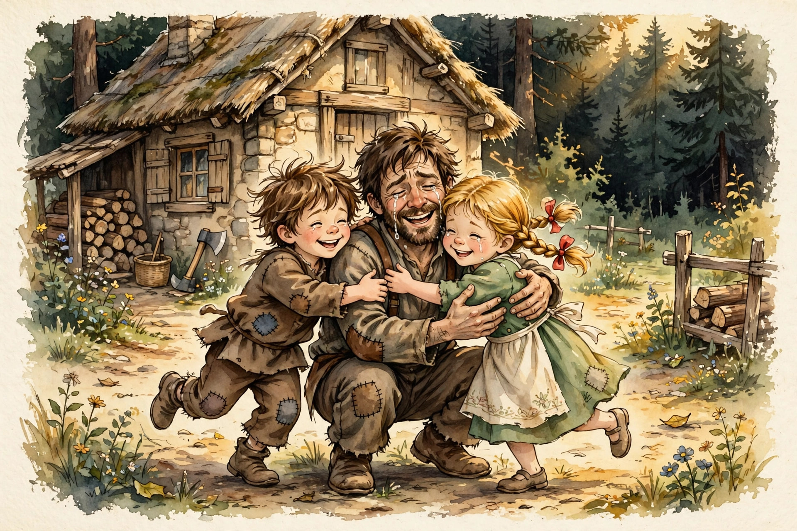
🔍 Zoom
Into their father's arms at last.
Scene 20 • Perfect Happiness
Gretel emptied her pinafore until pearls and precious stones ran about the room, and Hansel threw one handful after another out of his pocket to add to them. Then all anxiety was at an end, and they lived together in perfect happiness. And that is the end of the tale.
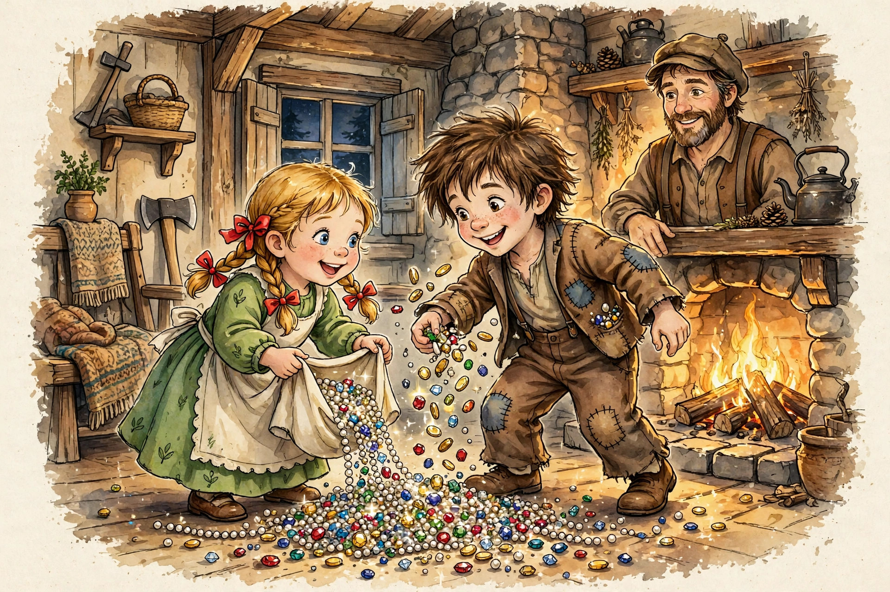
🔍 Zoom
And they lived together in perfect happiness.💭 Bedtime Chat
What should Hansel and Gretel have done before eating the gingerbread house?
🍬Don’t Take What’s Not YoursThe house of sweets belonged to someone else, even if it looked too good to be true. Always ask before you take — and be wary of things that seem too good to be true.
🤝Stick TogetherHansel and Gretel got through the dark forest and outwitted the witch by sticking together and helping each other. Look out for your brothers and sisters.
🎬 Watch & Listen
Hansel and Gretel — Full Story Video
Watch all 15 watercolor storybook illustrations paired with spoken neural voice narration and synchronized subtitles.